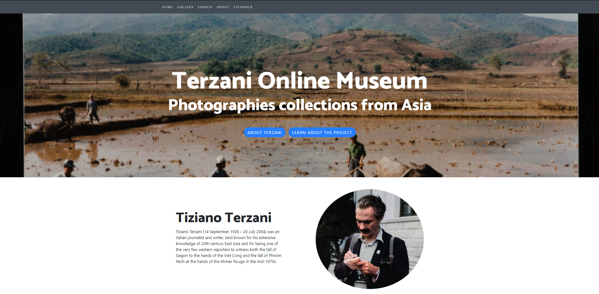

Hi. I'm Ravinithesh.
Welcome!
I'm a first-year Master student in Digital Humanities at EPFL. I'm broadly interested in application of Data Science in Social/Political Science.
Learn More
Welcome!
I'm a first-year Master student in Digital Humanities at EPFL. I'm broadly interested in application of Data Science in Social/Political Science.
Learn MoreHere's a list of Universities I have/am attending.
My work life!
Data Scientist
2018 - 2020
Part of the team that develops algorithms to model a warehouse for optimising the cost involved in logistic operations and automating them.
Research & Product dev. Internship
2016 - 2018
Created a working prototype and business plan for a system that enables the dairy farmers to do business, without the need for middlemen.
Research Internship
2017
Developed a system that can predict adverse digressions in a noisy industrial process using Extreme Learning Machines.
Research Internship
2015 - 2016
Developed solutions to predict i) load on a transformer and ii) the expected number of Electric Vehicles using Artificial Neural Nets in Ontario, Canada.

Through this project, we try to bring the photographs taken during Mr. Terzani's trip to South Asian countries to an online platform and make a large collection of photos navigable and searchable.

Developed formulations and software for adaptive learning (using Actor Critic) in Extreme Learning Machines (ELM) and it performed 2X faster and at comparable level with a similar system developed used Artificial Neural Networks on a hard industrial problem.
Adaptive Critic Design for Extreme Learning Machines applied to noisy and drifting industrial processes,
Ravinithesh Annapureddy, Arya K. Bhattacharya and Niranjan Reddy M.
IEEE Symposium Series on Computational Intelligence SSCI, 2018.
(link)
Advance Predictions of critical digressions in a noisy industrial process- performance of Extreme Learning Machines versus Artificial Neural Networks,
Ravinithesh Annapureddy, Arya K. Bhattacharya and G.Rishita.
IFAC Conference on Advances in Control and Optimization of Dynamical Systems ACODS, 2018.
(link)
Adaptive Critic Design for Extreme Learning Machines applied to noisy and drifting industrial processes,
Aditya Gupta, PLN Manikumar, Ravinithesh Annapureddy and Arya K. Bhattacharya.
IEEE India Council International Conference INDICON, 2017.
(link)
Magnetic Metamaterials: A comparative study of resonator geometry and metal conductivity,
Shashank Rangu, Kamireddy Sreekar, Ravinithesh Annapureddy, Kausik Basak, Murtaza Bohra and Dibakar Roy Chowdhury.
IUPAP Conference on Computational Physics CCP, 2015.
(link)